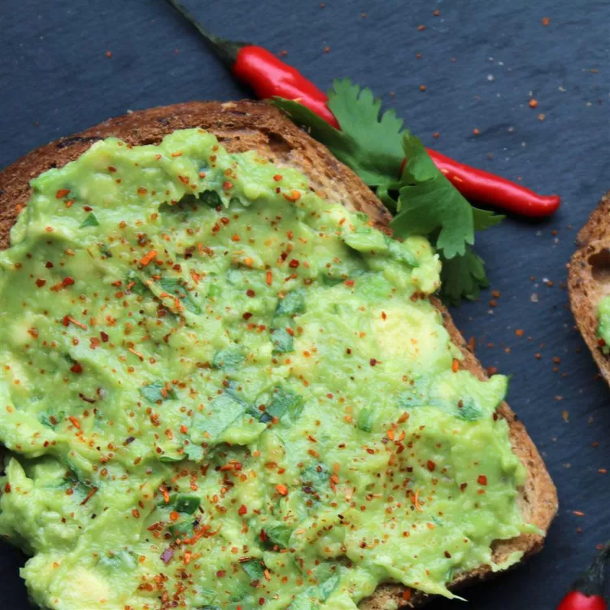

Avocado Toast (Vegan)

Description
Avocado toast is a deliciously hearty breakfast.
If you are not vegan, you can serve fried eggs on top for a delicious vegetarian meal.
Ingredients
- 4 slices whole-grain bread
- 1 avocado, halved and pitted
- 2 tablespoons chopped fresh parsley
- 1 ½ teaspoons extra-virgin olive oil
- ½ lemon, juiced, or to taste
- ½ teaspoon salt
- ½ teaspoon ground black pepper
- ½ teaspoon onion powder
- ½ teaspoon garlic powder
Steps
- Toast bread in a toaster or toaster oven.
- Mash avocado, parsley, olive oil, lemon juice, salt, black pepper, onion powder,
and garlic powder together in bowl using a potato masher; spread on top of toast slices.
Home